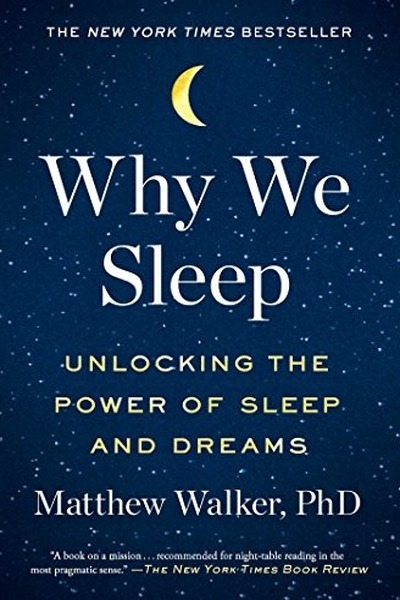

Library › Self-Improvement
Why We Sleep — Summary & Key Lessons

The new science of sleep and dreams — and the price your brain pays for skipping it.
📖 OPEN THE FULL INTERACTIVE BREAKDOWN →🌐 Read it in Hindi, Hinglish, Gujarati, Tamil & 22 more languages — free, with audio.
💡 The Big Idea
Sleep is a biological necessity, not a negotiable luxury: it consolidates memory, regulates emotion, cleans the brain of toxins and repairs the body's immune and metabolic systems. Chronic sleep loss quietly degrades cognition, health and lifespan while feeling 'fine'. Walker's warning: a society that glorifies early mornings and all-nighters is borrowing against its own brain.
🧠 The 6 Key Lessons
Lesson 1: Sleep Is Non-Negotiable Biology
Chapter 1: To Sleep
Every animal sleeps; sleep is older than the brain functions it serves. Walker shows that sleep is not a passive off-switch but an active factory: it consolidates memories, washes metabolic waste from the brain and recalibrates hormones. Skipping it is not a lifestyle choice — it is a biological debt that compounds.
📖 Example: Rats forced to stay awake die within weeks, and humans restricted to six hours a night show cognitive deficits equal to two nights of total deprivation — while believing they're fine. The body doesn't negotiate; it just degrades silently. Read the full example →
⚡ Do this: Treat sleep like a prescription: fix a bedtime and wake time, and protect them as you would a client meeting.
Lesson 2: Sleep Is the Memory Editor
Chapter 2: Sleep and Memory
During deep sleep the brain replays and strengthens what you learned during the day; during REM it weaves facts into insight. Cramming before exams and then all-nighters is backwards — the learning happens in sleep, not in the last hour of study. Sleep before and after learning determines whether knowledge sticks.
📖 Example: Students who slept after studying remembered 20-40% more than those who stayed awake, and those who napped before learning absorbed more. The brain edits overnight: facts filed, insights connected, skills automated. Read the full example →
⚡ Do this: Study before sleep, not after — and take one 20-minute nap in the afternoon if you need to retain more.
Lesson 3: Your Emotions Run on Sleep
Chapter 3: Sleep and Emotion
Sleep-deprived brains overreact: the amygdala becomes hyperactive while the prefrontal cortex that restrains it goes quiet. Walker shows that a tired person reads neutral faces as threatening and makes impulsive, pessimistic decisions. Sleep is emotional regulation; tiredness is emotional volatility.
📖 Example: Sleep-deprived judges issue harsher sentences, tired negotiators make worse deals, and exhausted couples fight more — because the emotional brake is offline. One full night of sleep measurably restores patience, empathy and judgment. Read the full example →
⚡ Do this: Before any emotionally loaded conversation or big decision, check your sleep. If you're under seven hours, reschedule — or expect the amygdala to drive.
Lesson 4: The Body Pays for the Brain's Borrowing
Chapter 4: Sleep and Health
Short sleep is linked to weight gain, diabetes, heart disease, weakened immunity and even cancer risk — because sleep regulates appetite hormones, blood sugar and immune function. Walker's message: the all-nighter you celebrate is a down payment on chronic disease. Health is largely sleep management.
📖 Example: People sleeping five hours eat more, crave junk, and show impaired glucose control; after vaccination, those who sleep less produce dramatically fewer antibodies. The body runs its entire repair economy during sleep — shortchange it and the bills arrive as… Read the full example →
⚡ Do this: Name one health metric you care about (weight, immunity, energy) and track how it responds to a consistent 7-8 hour week.
Lesson 5: Dreams Are the Brain's Creative Laboratory
Chapter 5: Dreams
REM sleep doesn't just process memory — it combines distant ideas into new ones, which is why breakthroughs arrive in dreams. Walker documents scientists and artists whose solutions came from REM. The brain at night is not idle; it is prototyping futures, including 'memories of things that never happened'.
📖 Example: The chemist Dmitri Mendeleev reportedly dreamed the periodic table, and countless musicians have woken with melodies fully formed. REM takes your day's fragments and cross-indexes them — creativity is often just well-slept association. Read the full example →
⚡ Do this: Keep a notebook by your bed. For one week, write your first thought upon waking — you may find your best ideas arrive before your coffee.
Lesson 6: Protect Your Sleep Like a Resource
Chapter 6: Sleep Loss
Walker ends with practical armor: fixed schedule, cool dark room, no screens before bed, caffeine curfews, and the radical idea that sleep is not downtime but the foundation of all uptime. Societies that worship busyness must relearn that the 'useless' hours are the most useful of all.
📖 Example: Companies like Google and Nike installed nap pods after data showed rested employees think better; hospitals that reduced resident fatigue cut errors. The organizations that protect sleep outperform those that brag about surviving on four hours. Read the full example →
⚡ Do this: Make one environmental change this week — blackout curtains, phone out of the bedroom, cooler room — and measure your energy difference in a fortnight.
✅ 5-Step Action Plan
- Fix a bedtime and wake time and protect them for 30 days
- Move your most important studying/before sleep, not after
- Reschedule emotionally loaded talks when sleep-deprived
- Track one health metric against a 7-8 hour sleep week
- Keep a dream journal for one week
⚠️ When This Doesn't Work
⚠️ When this doesn't work: Sleep science is compelling, but it can turn into another anxiety source — sleep tracking apps and perfectionism about 'optimal sleep' create the very stress that keeps people awake. If you have insomnia or night-shift work, blanket advice like 'just sleep more' is not enough; seek clinical help rather than guilt.
💀 The Graveyard Proves It
🚀 NASA Challenger — The Engineers Said No. Burn: 7 astronauts, live on television. Read the full case study →
💬 Best Quotes from Why We Sleep
- “Sleep is the Swiss Army knife of health.”
- “The decimation of sleep throughout industrialized nations is having a catastrophic impact on our health, wellness, safety and productivity.”
- “Routinely sleeping less than six hours is a slow form of self-harm.”
Interactive version: mark lessons as read, listen in your language, share quote cards.